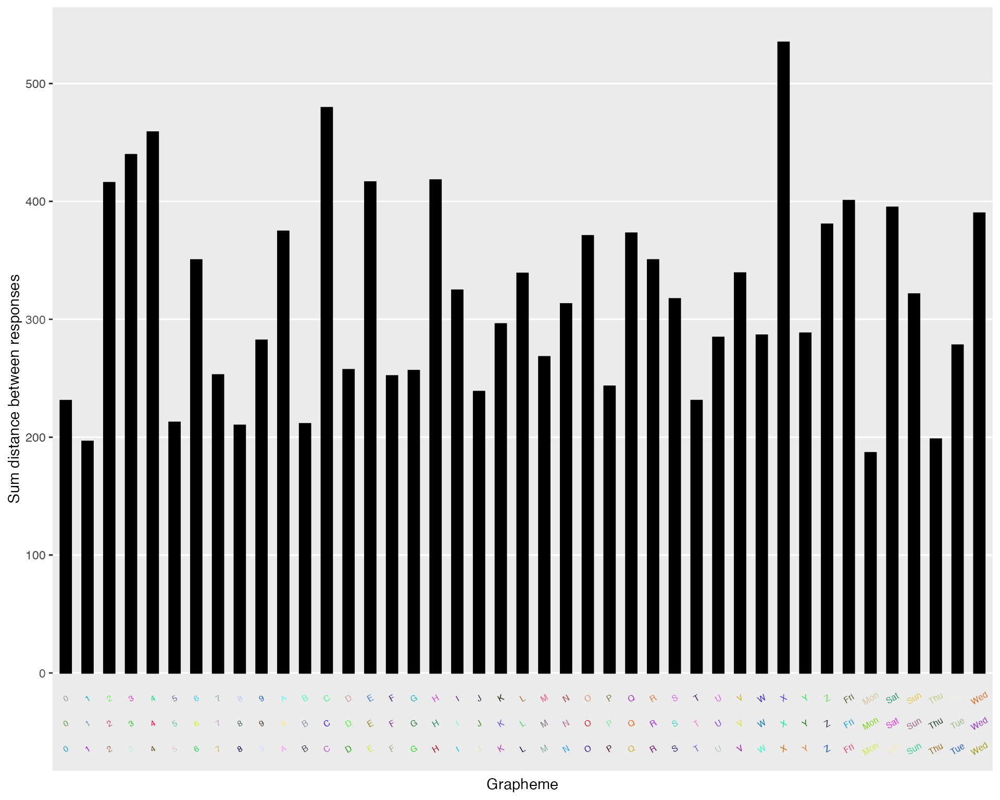

vignettes/synr-tutorial.Rmd
synr-tutorial.RmdWithin synesthesia research, specifically research about grapheme-color synesthesia, consistency tests are often used. Basically, a participant is shown a set of graphemes (e. g. letters, digits, months, or other words) and has to respond by indicating what color, if any, they associate with the grapheme. Each grapheme is repeated a certain number of times, usually three times, throughout the test. If the participant is unusually consistent in the colors they respond with, e. g. choosing a red color every time an ‘A’ is shown and always choosing a green color for ‘H’, this indicates that the participant might have synesthetic grapheme-color associations. In reality of course, there might be other reasons for consistent response patterns, such as if the participant employed mnemonic strategies. It may therefore be appropriate to combine consistency testing with other measures for synesthesia classification. Still, consistency testing is widely considered to be an important tool for synesthesia research.
In consistency testing, participants’ levels of consistency are estimated by using a score based on response colors’ color space distances. This has been called by different names, such as ‘color variation score’. Within the synr package, the term ‘consistency score’ is used to refer to this score.
The aim of this package is to facilitate analysis of consistency test data by providing functionality for rolling all the consistency test data up into one specialized R object. This object, with its linked methods, constitutes an effective interface for:
When using synr, your main interface to the data is the ParticipantGroup class. For information on how to convert raw consistency test data into a ParticipantGroup object, please see the separate tutorial Creating ParticipantGroup objects. Here, it’s assumed that the raw data are in ‘long format’ and are thus loaded like this:
pg <- create_participantgroup(
raw_df=synr_exampledf_long_small,
n_trials_per_grapheme=2,
id_col_name="participant_id",
symbol_col_name="trial_symbol",
color_col_name="response_color",
time_col_name="response_time",
color_space_spec="Luv"
)Once you have a ParticipantGroup object (simply called ‘participantgroup’ from here on), you can start using methods with it and accessing its attributes. synr implements this with reference classes, which is an advanced topic. The idea however is that you can learn through this vignette and synr’s help documentation how to use the tools without having to worry about how they work under the hood.
The participantgroup has a nested structure, where the participantgroup has a list of participants, and each participant has a list of graphemes. By using $ as a separator, you can specify a participant and/or a grapheme to drill down into this nested structure and access data or methods you need.
Let’s start by accessing participants’ data. Say you want to find what colors the participant with ID ‘3’ used for the symbol ‘A’. You can do this by using the syntax <participantgroup>$participants[['<ID>']]$graphemes[[<symbol>]].
fetched_grapheme_data <- pg$participants[['3']]$graphemes[['A']]
print(fetched_grapheme_data)
#> Reference class object of class "Grapheme"
#> Field "symbol":
#> [1] "A"
#> Field "response_colors":
#> [,1] [,2] [,3]
#> [1,] 64.41700 -25.894798 66.0961
#> [2,] 33.73906 -2.818399 -123.0723
#> Field "response_times":
#> [1] 9.9 8.1
#> Field "color_space":
#> [1] "Luv"The response colors are represented by an nx3 matrix, where n is the number of trials per grapheme (2 in this example). Each row corresponds to one response. The three columns correspond to the dimensions of the used color space, in this case ‘L’, ‘u’ and ‘v’ (because of the specification color_space_spec = "Luv" when creating the participantgroup).
You can access participants by either their row number in the raw data frame, or by their participant ID. In the example, these happen to be the same except that one is of type numeric and the other of type character (the participant on row number 3 of the raw data frame has the ID ‘3’), so both pg$participants[['3']]$graphemes[['A']] and pg$participants[[3]]$graphemes[['A']] work. If instead the third participant was called ‘jane’, you could use either pg$participants[['jane']]$graphemes[['A']] or pg$participants[[3]]$graphemes[['A']].
To use methods with synr objects, like the participantgroup or an individual participant, you use the syntax <object>$<method_name>(). The examples below illustrate this.
get_consistency_score
You can calculate the consistency score of a single grapheme by:
get_consistency_score.
# fetching the consistency score of the second participant's grapheme 'A'
cscore_p2_A <- pg$participants[[2]]$graphemes[['A']]$get_consistency_score()
print(cscore_p2_A)
#> [1] 76.40256get_mean_consistency_score
You can calculate an individual participant’s mean consistency score by:
get_mean_consistency_score:
mean_cscore_p2 <- pg$participants[[2]]$get_mean_consistency_score()
print(mean_cscore_p2)
#> [1] 101.3738
mean_cscore_p1 <- pg$participants[['1']]$get_mean_consistency_score()
print(mean_cscore_p1)
#> [1] 131.206get_consistency_scores
Instead of doing it for just one grapheme, you can calculate the grapheme-level consistency score for all graphemes of a participant using the method get_consistency_scores, which produces a list:
cscores_p3 <- pg$participants[[3]]$get_consistency_scores()
print(cscores_p3)
#> $A
#> [1] 193.0242
#>
#> $`7`
#> [1] 164.87
#>
#> $D
#> [1] 97.98484If you prefer the data frame format, you can convert the list into a data frame:
cscores_p3_df <- data.frame(cscores_p3)
print(cscores_p3_df)
#> A X7 D
#> 1 193.0242 164.87 97.98484get_mean_consistency_scores
What many will want to do is simply calculate the mean consistency scores for all participants. The participantgroup method get_mean_consistency_scores does just that, producing a numeric vector with the consistency scores:
mean_cscores <- pg$get_mean_consistency_scores()
print(mean_cscores)
#> [1] 131.2060 101.3738 151.9597The order of the mean consistency scores is based on the order of participants in the original raw data frame.
If you want to form a data frame that makes it easy to see which participant goes with which participant score, the participantgroup method get_ids comes in handy:
mean_cscores <- pg$get_mean_consistency_scores()
p_ids <- pg$get_ids()
mean_scores_df <- data.frame(participant_id=p_ids, mean_consistency_score=mean_cscores)
print(mean_scores_df)
#> participant_id mean_consistency_score
#> 1 1 131.2060
#> 2 2 101.3738
#> 3 3 151.9597It’s often helpful to examine how many valid color responses participants have provided during the experiment. It’s common for consistency tests to provide some kind of ‘no color’ response. This is usually provided mainly as a tool for people who do have synesthetic associations to use for non-inducing stimuli, but might be ‘abused’ by people with no synesthetic associations. A mean consistency score is virtually meaningless if a participant has only picked a color for say two graphemes, as it would be very easy for that person to memorize what color to use for each grapheme. For these reasons, synr provides functionality for examining how many of a participant’s graphemes have only valid color responses.
Note that for synr to work, ‘no color’ responses must be coded as NA values. For more information about this, please see the vignette Creating ParticipantGroup objects.
get_num_non_na_colors
You can calculate the number of non-missing response color values for a single grapheme by:
get_num_non_na_colors.
p1_A_numvalid <- pg$participants[[1]]$graphemes[['7']]$get_num_non_na_colors()
print(p1_A_numvalid)
#> [1] 2So, the first participant gave two valid (non-NA) color responses for the grapheme ‘7’, and they were registered correctly.
get_number_all_colored_graphemes
For a participant, you can get the number of graphemes that only have non-NA color responses. This would mean the number of graphemes with 3 non-NA color responses, if there are 3 trials/grapheme. You calculate the number of graphemes with only non-NA responses by:
get_number_all_colored_graphemes:
num_onlynonna_p2 <- pg$participants[[2]]$get_number_all_colored_graphemes()
print(num_onlynonna_p2)
#> [1] 3So, the second participant gave only valid (non-NA) color responses for 3 graphemes.
get_numbers_all_colored_graphemess
The participantgroup method get_numbers_all_colored_graphemes produces a numeric vector that holds each participant’s number of valid color responses:
num_onlynonna <- pg$get_numbers_all_colored_graphemes()
print(num_onlynonna)
#> [1] 3 3 3All three participants gave only valid (non-NA) color responses for 3 graphemes. The values are in the same order that participants were in in the raw data frame, meaning that the first value corresponds to the first participant, and so on.
Of course, you can combine these values with participant ID’s just like we did above with mean consistency scores:
mean_cscores <- pg$get_mean_consistency_scores()
num_onlynonna <- pg$get_numbers_all_colored_graphemes()
p_ids <- pg$get_ids()
ctest_summary_df <- data.frame(participant_id=p_ids,
mean_consistency_score=mean_cscores,
num_valid_graphemes=num_onlynonna)
print(ctest_summary_df)
#> participant_id mean_consistency_score num_valid_graphemes
#> 1 1 131.2060 3
#> 2 2 101.3738 3
#> 3 3 151.9597 3Even if a participant responds with a color on each consistency test trial and the data are correctly saved, they might have used only one or two limited color ranges for all their responses. It’s a lot easier to give consistent responses if all you use is one red color and one green color. For this reason, it’s helpful to be able to check what proportion of participant responses fall within a certain color range. This doesn’t solve the problem altogether, but at least you can find obviously suspect data. synr provides functionality for this.
get_prop_color
First you need to decide what color range you are interested in knowing how many response colors fall into. For this grapheme-level method, and for the participant/participantgroup-level methods below, you have two choices for specifying the color range. The first is to use color_label=<label>, with supported labels being ‘blue’, ‘red’, ‘green’, ‘white’, ‘black’ and ‘hazy’ (‘greyish’ colors). The other option is to specify value ranges by using two-element numeric vectors, with rgb (red, green, blue) values on a 0-1 scale: r = <vector1>, g = <vector2>, b = <vector3>. For example, r=c(0, 0.3), g=c(0, 0.3), b=c(0, 0.3) would code for a dark color range.
Let’s look at a couple of examples:
propred_p3_7 <- pg$participants[[3]]$graphemes[['7']]$get_prop_color(color_label="red")
print(propred_p3_7)
#> [1] 0.5The proportion of participant 3’s response colors for the grapheme ‘7’ that fall within a red color range is 0.5 (50%). This means that half of the response colors for the grapheme, which is 1 in the example since there were only two responses/grapheme. Note that the ranges of color labels included in the synr package are arbitrarily delimited - consider them very rough tools, not grounded in any science.
Specifying color ranges in the method call:
propturquoise_p1_A <- pg$participants[[1]]$graphemes[['A']]$get_prop_color(r=c(0, 0.3),
g=c(0.7, 1),
b=c(0.7, 1))
print(propturquoise_p1_A)
#> [1] 0.5The proportion of participant 1’s response colors for the grapheme ‘A’ that are low on red, but high on green and blue color dimensions, is 0.5 (50%).
get_prop_color
This works essentially the same as the grapheme-level method:
propgreen_p1 <- pg$participants[[1]]$get_prop_color(color_label = 'black')
print(propgreen_p1)
#> [1] 0.1666667The proportion of participant 1’s response colors that are black/very dark, is ~=0.167 (16.7%), which is roughly one sixth, meaning one of the participant’s six responses falls within the ‘black’ label’s color range.
propblue_p2 <- pg$participants[[2]]$get_prop_color(r=c(0, 0.3),
g=c(0, 0.3),
b=c(0.7, 1))
print(propblue_p2)
#> [1] 0The proportion of participant 2’s response colors that are high in blue, but low in red and green, is ~=0.167 (16.7%).
get_prop_color_values
This also works essentially the same as the participant/grapheme-level method. The difference is that it returns a numeric vector with the values you would get if you called the participant-level get_prop_color for each participant:
propred_vals <- pg$get_prop_color_values(color_label = 'red')
print(propred_vals)
#> [1] 0.0000000 0.0000000 0.1666667Participants 1 and 2 gave no responses that fall within the range defined by the ‘red’ label, while ~=16,7% of participant 3’s response colors fall within the range.
propwhite_vals <- pg$get_prop_color_values(r=c(0.7, 1),
g=c(0.7, 1),
b=c(0.7, 1))
print(propwhite_vals)
#> [1] 0.0000000 0.0000000 0.1666667Participants 1 and 3 gave no responses that have very high r/g/b color coordinates (i. e. are white), while ~=16,7% of participant 2’s response colors are white.
You can again of course combine all the kinds of summary data we have talked about so far:
mean_cscores <- pg$get_mean_consistency_scores()
num_onlynonna <- pg$get_numbers_all_colored_graphemes()
p_ids <- pg$get_ids()
propred_vals <- pg$get_prop_color_values(color_label = 'red')
propwhite_vals <- pg$get_prop_color_values(r=c(0.7, 1),
g=c(0.7, 1),
b=c(0.7, 1))
ctest_summary_df <- data.frame(participant_id=p_ids,
mean_consistency_score=mean_cscores,
num_valid_graphemes=num_onlynonna,
proportion_red=propred_vals,
proportion_white=propwhite_vals)
print(ctest_summary_df)
#> participant_id mean_consistency_score num_valid_graphemes proportion_red
#> 1 1 131.2060 3 0.0000000
#> 2 2 101.3738 3 0.0000000
#> 3 3 151.9597 3 0.1666667
#> proportion_white
#> 1 0.0000000
#> 2 0.0000000
#> 3 0.1666667Participants who have synesthetic associations might only have those for some of the graphemes used in a test. For instance, a participant might only have synesthetic associations for weekdays, but not digits or letters, even though all are included in the test. synr helps you apply filters to calculate summary statistics for only a subset of graphemes. Filters are applied by passing a character vector of symbols/graphemes to the symbol_filter= argument, when using participant-level or participantgroup-level methods for summary statistics.
For purposes of illustrating filtering, the larger example data frame synr_example_full is used (if you want, you can view it by using View(synr_example_full) once you’ve run library(synr)).
pg_full <- create_participantgroup_widedata(synr_example_full,
n_trials_per_grapheme = 3,
participant_col_name = 'participant_id',
symbol_col_regex='symbol',
color_col_regex = 'color',
color_space_spec = "Luv")
propred_digits_pH <- pg_full$participants[['H']]$get_prop_color(color_label = 'red',
symbol_filter=c('0', '1', '2', '3',
'4', '5', '6', '7',
'8', '9'))
print(propred_digits_pH)
#> [1] 0.06666667Looking at response colors for the participant with ID ‘H’ (remember, we can specify participants using their row number in the raw data frame, or their participant ID), ~=6.7% of the response colors for trials with digits as graphemes were red.
cscores_weekdays <- pg_full$get_mean_consistency_scores(symbol_filter=c('Monday',
'Tuesday',
'Wednesday',
'Thursday',
'Friday',
'Saturday',
'Sunday'))
print(cscores_weekdays)
#> [1] 272.3390 296.0390 320.8976 294.4172 311.2973 310.0333 292.2851 329.5093
#> [9] 334.3031 309.0634The produced vector holds each participant’s (there are 10 participants in this case) mean consistency score, only taking trials that had a weekday grapheme into account.
As you can see above, specifying the symbol_filter character vector might take some typing. To simplify things, synr includes the function build_grapheme_vector, with support for digits/letters/weekdays in English and Swedish. Say you want to filter by uppercase digits and letters (ignoring e. g. weekdays if those were also in your consistency test):
AZ_09_filter <- build_grapheme_vector(language='english',
use_digits=TRUE,
use_letters=TRUE)
cscores_AZ_09 <- pg_full$get_mean_consistency_scores(symbol_filter=AZ_09_filter)
print(cscores_AZ_09)
#> [1] 317.3262 321.0985 313.7232 305.2310 315.5543 319.2919 300.0633 311.2428
#> [9] 296.0374 304.4304If you instead want lowercase weekdays, you could build the vector this way:
weekdays_filter <- build_grapheme_vector(language='english',
use_weekdays=TRUE,
uppercase=FALSE)
print(weekdays_filter)
#> [1] "monday" "tuesday" "wednesday" "thursday" "friday" "saturday"
#> [7] "sunday"As you use synr to calculate more statistics you might find that simply cramming them all into one huge data frame becomes unwieldy. It is recommended that you instead separate different kinds of summary statistics into different data frames. You can then, when you need to combine data from the different data frames for analysis, intuitively join the data frames by making use of the dplyr package, specifically its function inner_join. Here’s a simple example of how you can use inner_join:
install.packages('dplyr') # if you haven't installed dplyr yet
library(dplyr)
pg <- create_participantgroup_widedata(synr_exampledf_wide_small,
n_trials_per_grapheme = 2,
participant_col_name = 'participant_id',
symbol_col_regex='symb',
color_col_regex = 'col',
color_space_spec = "Luv")
mean_cscores <- pg$get_mean_consistency_scores()
num_onlynonna <- pg$get_numbers_all_colored_graphemes()
p_ids <- pg$get_ids()
propred_vals <- pg$get_prop_color_values(color_label = 'red')
propwhite_vals <- pg$get_prop_color_values(r=c(0.7, 1),
g=c(0.7, 1),
b=c(0.7, 1))
cons_df <- data.frame(participant_id=p_ids,
mean_consistency_score=mean_cscores)
propcol_df <- data.frame(participant_id=p_ids,
proportion_red=propred_vals,
proportion_white=propwhite_vals)
# we now have one data frame for consistency scores, and one for
# 'proportion of responses falling within color range <X>' values
# joining the two data frames
cons_propcol_df <- inner_join(cons_df, propcol_df, by='participant_id')The code above would join the two separate data frames into one. They key is to make sure each separate data frame includes the participant ID’s, and then set the by= argument to 'participant_id' (or whatever you call your data frames’ participant ID columns). This example is a bit contrived, but you will probably want to adopt this strategy as you calculate more statistics, using different filters. Note that you can also use inner_join to combine the summary statistics with other data you might have about your participants. Just make sure that the other data frames have a participant ID column with the same name as the column name used in your summary statistics data frames.
It can often be helpful to get an overview of participants’ response colors and each grapheme’s consistency score. synr uses ggplot2 to achieve this:
get_plot
For details on how the get_plot method works, please have a look at the documentation for the Participant class, by using help(Participant). There, you can scroll down to the description of get_plot, under “Methods”.
pg_full <- create_participantgroup_widedata(synr_example_full,
n_trials_per_grapheme = 3,
participant_col_name = 'participant_id',
symbol_col_regex='symbol',
color_col_regex = 'color',
color_space_spec = "Luv")
p6_plot <- pg_full$participants[[6]]$get_plot(grapheme_size=2.2,
grapheme_angle=30)
p6_plot At the bottom of the plot, you see the graphemes used in the test, colored in the participant’s response colors. The bars represent the consistency score for each grapheme. (note that if you produce a plot for a participant who has no valid response colors at all, or only used black/white colors, the resulting plot will unfortunately look odd. this is a known bug.)
save_plot
For details on how the save_plot method works, have a look again at help(Participant). Scroll down to the description of save_plot, under “Methods”. What is most essential is that you specify the path= argument, which is where you want the plot to be saved (including filename at the end), and the file_format= argument:
pg_full$participants[[6]]$save_plot(path='path/to/save/folder/filename.png',
file_format='png',
grapheme_size=2.2,
grapheme_angle=30)save_plots
For details on how the save_plots method works, run help(ParticipantGroup). Scroll down to the description of save_plots, under “Methods”. What is most essential is again that you specify the path= argument, which is the directory you want the plots to be saved to, and the file_format= argument:
pg_full$save_plots(path='path/to/save/folder',
file_format='png',
grapheme_size=2.2,
grapheme_angle=30)If you have any suggestions on improvements you can contact me as the author and maintainer of the package at datalowe@posteo.de, or you can directly commit code improvements to the github repo at https://github.com/datalowe/synr.